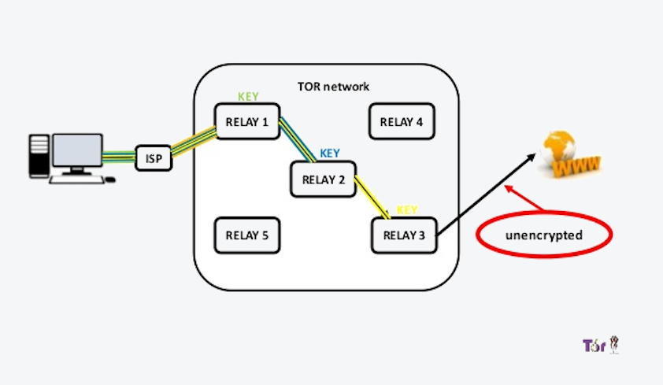
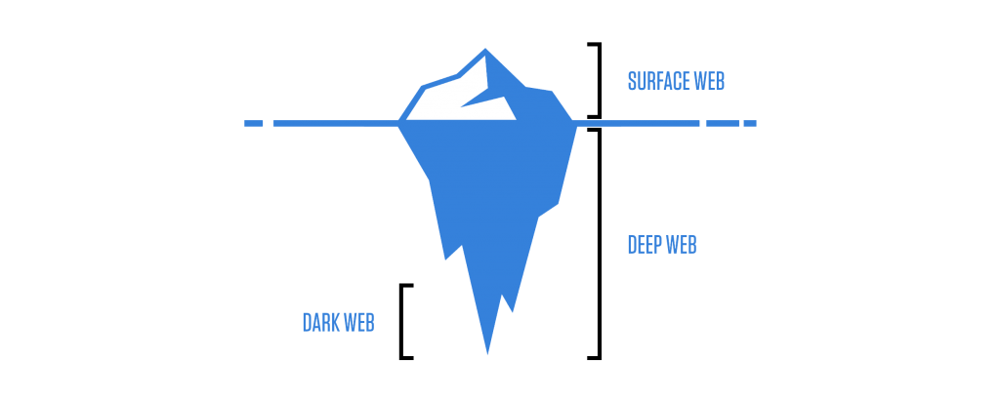

عنوان ارائه:
مقدمهای بر Tor

دانشجوی رشتهی مهندسی نرمافزار
درس روش پژوهش و ارائه
زمان: ۱۱ خرداد ۹۸

-
مقدمه
- آشنایی و معرفی Tor
-
معرفی شبکهی Tor
- Tor چگونه کار میکند؟
- توضیحی در مورد رمزنگاری دو کلیده
- پل چیست؟
- تفاوت میان Tor و vpn
- سرویسهای مخفی Tor
- سرویسهای مخفی Tor چگونه کار میکنند؟
- دارک وب و دیپ وب چیست؟
- نحوهی استفاده
- معرفی Orbot, Orfox, Tor Browser
- پرسش و پاسخ
معرفی و آشنایی با سرویس Tor
-
The Onion
Router (Tor)
از آزمایشگاه تحقیقات نیروی دریایی ایالات متحده تا دولت سوئد!
محبوب ترین و امن ترین ابزار برای وب گردی با هویت ناشناس
۱
سرویس Tor چگونه کار میکند؟
۲
پل(Bridge) چیست؟
دلایل استفاده از پل
- بلاک شدن شبکهی Tor توسط سرویس دهندههای اینترنت
- جلوگیری از فهمیدن سرویس دهندههای اینترنت در مورد استفاده از Tor
سه راه دریافت پل:
از طریق تنظیمات شبکهی Tor(مخصوص کاربران مرورگر Tor)
از طریق سایت دریافت پل (bridges.torproject.org)
درخواست از طریق ایمیل (bridges@torproject.org)
get transport obfs4
۴
تفاوت میان Tor و vpn
مزایا و معایب استفاده از Tor
Tor یک سرویس رایگان است توسط برخی از سرویس های وب مسدود شده است
به نسبت vpn ها خیلی سختتر مسدود میشود به نسبت vpn سرعت کمتری دارد
Tor از حریم شخصی کاربر حفاظت میکند آسیبپذیر بودن در برابر پروتکل http
مزایا و معایب استفاده از vpn
در مقایسه با Tor سرعت بالاتری دارد امنیت ضعیفی دارند
با استفاده از vpn، کاربر ناشناس باقی میماند(همچنین Tor) اکثریت غیر رایگان هستند
۵
سرویسهای مخفی Tor
سرویسهای مخفی Tor چگونه کار میکنند؟
گره معرف
Destributed Hash Table
گره محل ملاقات

۶
دارک وب و دیپ وب چیست؟
دیپ وب
به علت ایندکس نشدن در موتورهای جست و جوی معمولی و دسترسی فقط از طریق شبکه Tor به آن دیپ وب گفته میشود.
دارک وب
به علت ناشناس بودن و امن بودن شبکهی Tor برخی افراد از آن به منظور کارهای غیرقانونی استفاده میکنند به همین جهت این سرویس به نام دارک وب هم شناخته میشود.
۷
نحوهی استفاده از سرویس Tor
Tor browser
مرورگر اختصاصی Tor برای کاربران کامپیوتر
Orbot(android)
کلاینت اختصاصی Tor برای کاربران اندروید
Orfox(android)
مرورگر اختصاصی Tor برای کاربران اندروید
دانلود: /https://guardianproject.info/apps
۸
Any Question?